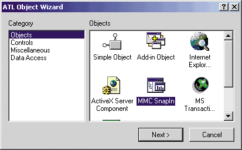

Вадим Мачулин
machulin@mail.ru
Полный вариант программного проекта, реализованного в рамках данной статьи (файл MMC_Proj.zip, 28 Кбайт), можно найти на сайте http://www.bytemag.ru. Для работы с ним понадобится Windows 2000 (допустимы Windows 9x и NT, но с установленным Microsoft Management Console 1.0) и Microsoft Visual C++ 6.0.
Круг задач, связанных с управлением (администрированием), достаточно широк. Можно администрировать операционную систему, различные программные комплексы, обычно называемые серверами (на память сразу приходит Microsoft SQL Server с Enterprise Manager). У вашей фирмы может быть собственный программный продукт, для которого необходим инструмент, позволяющий производить всевозможные настройки и добавления, а также запускать или останавливать систему. Возможно, такой инструмент у вас уже есть. Но в ряде случаев целесообразнее использовать стандартное средство. Те, кто работает с Windows 2000 и пользуется средствами администрирования этой ОС (например, Component Services, Event Viewer, Computer Management), наверное, заметили, что многие из этих средств имеют похожий интерфейс, чем-то напоминающий Explorer. Его обычные атрибуты - левая и правая панели (Scope и Result View Pane), меню, страницы свойств, панели управления, иерархическая структура элементов и т. д. На левой панели представлено дерево элементов, на правой - список (рис. 1).
| Рис. 1. Окно Microsoft Management Console.
|
Дело в том, что, вызывая все подобные средства, вы запускаете одну и ту же программу - Microsoft Management Console (MMC). Ее архитектура и идеология как раз и предназначены для администрирования. MMC работает со специальными COM-объектами - модулями Snap-in. Каждый модуль соответствует отдельному средству администрирования и описывает его внешний вид и поведение.
Написав свой модуль для MMC, вы получите полноценное средство администрирования с унифицированным современным пользовательским интерфейсом. Для этого достаточно реализовать COM-объект, поддерживающий стандартные для консоли интерфейсы. Вам будут доступны все возможности, которые появятся в MMC в будущем.
Создадим для примера "серверный" менеджер, который будет администрировать некоторые "серверы", расположенные в разных "серверных группах". Сервер можно создать, запустить, остановить и удалить. Можно также создать и удалить серверную группу. Наша консоль будет обладать многими стандартными возможностями MMC, и на ее примере в этой статье будут описаны принципы программирования для MMC.
Работа с MMC
Для работы потребуется ОС Microsoft Windows 2000 (впрочем, можно обойтись и версией 9x или NT, если в них предустановлена MMC), а также инструментарий Microsoft Visual C++ 6.0. Чтобы запустить MMC, нажмите кнопку Start (Пуск), выберите пункт Run (Выполнить) и в диалоговом окне наберите mmc. Появится пустая консоль, в которую с помощью диалогового окна Add/Remove Snap-in можно добавить новые модули (рис. 2). В списке модулей Snap-in уже есть объекты Services и Event Viewer. Если у вас есть SQL Server версии 7.0 или 2000, то в списке будет и модуль Microsoft SQL Server Enterprise Manager.
| Рис. 2. Добавление новых модулей (Snap-in) в консоль.
|
Соберите из готовых нужных вам модулей консоль и сохраните ее в файле с расширением MSC. Теперь у вас есть средства администрирования, объединенные в одном файле.
Файл конфигурации консоли (*.msc) содержит информацию о модулях, входящих в консоль, конфигурацию дерева элементов, общие настройки, а также специальные данные для каждого модуля. Стандартные средства Windows 2000, работающие с MMC, представляют собой файлы конфигурации, содержащие ссылки на один или несколько стандартных модулей.
Написание модуля для MMC
Запустите Microsoft Visual C++ 6.0 и с помощью мастера ATL COM AppWizard создайте новый проект (к примеру, MMCArticle) для внутрипроцессного COM-сервера. На первом шаге мастера укажите в качестве типа сервера (Server Type) Dynamic Link Library (DLL). Вызовите мастер ATL Object Wizard (меню Insert / New ATL Object) и добавьте новый COM-объект - MMC Snap-in (рис. 3).
|  | Рис. 3. Добавление в ATL-проект нового модуля для MMC.
|
В следующем окне ATL Object Wizard Properties в поле Short Name укажите имя ServerManager. Во вкладке MMC Snap-in отметьте, что модуль поддерживает окно About и контекстное меню, а также сохраняет некоторые свои данные с помощью COM-интерфейса - IPersistStreamInit (рис. 4). Нажмите OK и откомпилируйте проект. Получится новый модуль для консоли. Если снова запустить MMC, то в списке модулей (показанном на рис. 2) появится новый объект Snap-in под именем ServerManager. Добавив его в консоль, мы получим самый простой модуль, состоящий всего из одного (ничего не делающего) элемента.
| Рис. 4. Указание свойств модуля для MMC в ATL-проекте.
|
Структура MMC
Чтобы сделать чуть более сложную консоль, рассмотрим сначала, как MMC взаимодействует с нашим модулем (Snap-in). Элементы консоли делятся на три типа. Первый - это узлы дерева в левой панели. В англоязычном варианте MSDN они называются Scope Items (рамочные объекты). Если выделить узел в левой панели, то по умолчанию в списке правой панели появятся все дочерние по отношению к Scope Item объекты.
Второй тип элементов консоли - объекты, которые появляются только в правой панели. Они называются Result Items (конечные объекты). К примеру, в средстве администрирования Services элементы списка сервисов - это объекты типа Result item, и они не отображаются в структуре дерева в левой панели.
Третий тип элемента - это корневой элемент нашего модуля.
Snap-in, как уже говорилось, - это обычный COM-объект, но с некоторой оговоркой. Наш модуль должен реализовать два ко-класса (coclass). Первый регистрируется при старте модуля через функцию DllGetClassObject. Консоль запрашивает у него интерфейс IComponentData. С помощью метода CreateComponent этого интерфейса консоль получает указатель на интерфейс IComponent второго ко-класса. Первый ко-класс связан с левой панелью, второй - с правой.
В нашем ATL-проекте интерфейс IComponentData реализуется классом CServerManager, а IComponent - классом CServerManagerComponent.
Что должны делать интерфейсы
Интерфейс IComponentData связан с деревом узлов в левой панели. С помощью метода Initialize этого интерфейса консоль сообщает модулю о начале работы, а также передает указатель на интерфейс IUnknown, с помощью которого мы получаем интерфейс IConsole (подробнее об этом речь пойдет ниже). Метод Destroy сообщает об окончании работы консоли, метод Notify - о различных действиях пользователя в левой панели (развернуть дерево, удалить элемент, переименовать элемент и т. д.). С помощью метода CreateComponent консоль получает указатель на интерфейс IComponent.
IComponent связан со списком элементов в правой панели. Многие его методы похожи на методы интерфейса IComponentData. Так, метод Initialize сообщает о начале работы, метод Destroy - об ее окончании, Notify - о действиях пользователя в правой панели. С помощью метода GetResultViewType мы можем настроить вид правой панели. По умолчанию это просто список элементов, но можно сделать так, что будет отображаться Web-страница или элемент ActiveX.
Консоль предоставляет интерфейсы, с помощью которых модуль может управлять самой консолью. Интерфейс IConsole (в новых версиях есть IСonsole2, IСonsole3) обеспечивает общее управление консолью и получение других интерфейсов. IConsoleNameSpace служит для управления элементами в левой панели, IResultData - в правой панели.
Классы в ATL
Каждый элемент в консоли характеризуется своим изображением, именем, контекстным меню, панелью инструментов и реакцией на действия пользователя. Все это может инкапсулироваться в одном классе. В нашем проекте уже присутствует класс CServerManagerData, соответствующий самому верхнему узлу в дереве нашего модуля. CServerManagerData произведен от шаблонного класса CSnapInItemImpl Чтобы создать другие элементы консоли, можно просто скопировать описание и реализацию этого класса, переименовать его, затем сделать нужные изменения и получить класс, соответствующий новому элементу. Класс, соответствующий какому-либо элементу консоли, будем называть классом элемента.
Рассмотрим функционирование элемента левой панели. К примеру, в консоли есть некоторый родительский узел (элемент), и пользователь решил его развернуть. Мы можем определить состав и поведение дочерних узлов.
Допустим, мы хотим перехватывать событие, связанное с данным действием пользователя. В библиотеке ATL каждому типу элемента сопоставляется некоторый класс С++. У нас уже есть для примера класс CChildData, соответствующий дочернему элементу, и мы создаем его экземпляр. Пусть pChildData - это указатель на него. Далее с помощью метода InsertItem интерфейса IConsoleNameSpace можно добавить дочерний узел в дерево консоли. В качестве параметра методу передается указатель на структуру SCOPEDATAITEM, содержащую много всякой полезной информации о том, что представляет собой добавляемый узел.
В поле lParam этой структуры передается значение типа long, называемое в MSDN cookie. Значение cookie должен сгенерировать наш модуль. Мы связываем с этим значением узел в консоли. Далее этот параметр cookie будет передаваться явно и неявно в вызовах методов нашего модуля, в частности, в методах интерфейсов IComponent и IComponentData.
В соответствии с идеологией ATL значения cookie - это адреса экземпляров классов элементов (ATL рассматривает их как экземпляры абстрактного класса CSnapItem). В нашем случае значение cookie - это значение переменной pChildData.
Далее консоль вызывает метод QueryDataObject интерфейса IComponentData для получения объекта данных (интерфейс IDataObject), соответствующего этому cookie. Класс CServerManager через cookie находит экземпляр класса и вызывает его метод GetDataObject, при этом получаемый объект данных опять-таки содержит внутри себя значение cookie. Если значение cookie равно 0, то запрашиваются данные для корневого элемента. В этом случае адрес экземпляра нужного класса нужно искать другим способом.
Получив объект данных во время какого-либо события, консоль вызывает метод Notify интерфейса IComponentData (или интерфейса IComponent). ATL получает из него cookie, снова находит экземпляр нашего класса и уже у него вызывает метод Notify.
Для чего такие сложности с IDataObject? Они позволяют выполнять, к примеру, операции копирования и вставки через буфер обмена, работающий с объектом данных, или операции Drag&Drop. Благодаря ATL не приходится напрямую работать с IDataObject.
Пожалуй, это самая важная функция, с которой мы будем больше всего работать. Вот ее описание:
Параметр event - тип события, значения arg и param зависят от типа события. Перечислим основные события, с которыми мы будем работать.
Каждое событие в методе можно обработать в блоке switch - case инструкции, что ATL по умолчанию и делает. Далее, когда мы будем говорить про обработку события вида MMCN_xxxxx, всегда будет иметься в виду соответствующий блок switch - case инструкции функции Notify класса элемента консоли.
С помощью идентификатора элемента мы можем управлять его поведением в консоли. Идентификатор элемента передается в качестве параметра методов IConsole, IComponentData, IComponent (GetItem, GetParentItem, SetItem, DeleteItem, UpdateAllViews и т. д.).
Получить идентификатор можно при создании элемента. В частности, для объектов Scope item его возвращает метод InsertItem интерфейса IComponentData в поле ID структуры SCOPEDATAITEM.
Можно сказать, что cookie и идентификатор элемента дополняют друг друга: cookies определяют сущности в нашем модуле, а идентификаторы определяют сущности в консоли.
Мы будем работать с тремя видами узлов (корневой, компьютеры и серверы) и соответственно создадим из класса CServerManagerData еще два класса элемента с помощью команд Copy*Paste. Назовем новые классы CserverGroupData и CServerData. Поскольку наш проект невелик, описание и реализацию классов оставим в файлах ServerManager.h и ServerManager.cpp, сгенерированных ATL. Кроме того, позаботимся о переименовании конструкторов, параметров шаблонных родительских классов и т. п. Каждый класс характеризуется следующими данными, хранящимися в статических полях класса:
Каждому типу узла соответствуют свои параметры GUID, SZDISPLAY_NAME и SNAPIN_CLASSID. Эти данные передаются вместе с IDataObject. Для нового класса мы сгенерируем новый GUID и все остальные атрибуты. К примеру, для CServerGroupData это будет выглядеть так:
Классы CServerManagerData, CServerGroupData содержат дочерние узлы, поэтому
добавим к каждому из них поле
хранящее список всех дочерних элементов.
В случае реализации события MMCN_SHOW параметр arg указывает, виден или скрыт контекст элемента в правой панели. Если arg = 1, то в параметре param содержится идентификатор данного элемента. Добавим в блок case MMCN_SHOW: функции Notify класса CServerManagerData следующий код, чтобы запомнить идентификатор корневого элемента:
Каждый элемент должен как-то отображаться. Посылая сообщение MMCN_ADD_IMAGES, консоль спрашивает у нашего узлового класса, какие рисунки нужно для этого использовать. ATL уже сгенерировала код, который загружает картинку из ресурсов:
Ресурс должен представлять растровое изображение размером 16nх16 для маленьких значков и 32nх32 для больших. Каждый квадрат 16х16 или 32х32 соответствует одному изображению. Загрузив общий массив из n изображений, мы можем обращаться к нему по индексам 0 - (n-1), например, при создании нового элемента:
Наш модуль поддерживает интерфейс IExtendContextMenu и сообщает консоли, что он может добавлять свои пункты в ее контекстное меню. У этого интерфейса всего два метода (кроме стандартных Unknown) - AddMenuItems и Command.
Первый вызывается, когда пользователь открывает контекстное меню. В нем модулю передается указатель на интерфейс IDataObject (чтобы мы знали, для какого элемента вызывается меню) и указатель на интерфейс IContextMenuCallback с одним методом - AddItem. Используя этот метод, наш модуль добавляет в меню свои пункты. При этом каждому пункту меню присваивается некоторый идентификатор, передающийся обратно через метод Command (вместе с тем же IDataObject), когда пользователь выбирает данный пункт меню.
Как обычно, библиотека ATL избавляет от работы со всей этой внутренней кухней. В нашем проекте уже есть ресурс меню, созданный мастером - IDR_SERVERMANAGER_MENU. На самом верхнем уровне есть пункты - TOP, NEW, VIEW, TASK. Они соответствуют четырем разделам контекстного меню, куда мы можем добавить свои дополнительные пункты. В частности, NEW и VIEW соответствуют подпунктам New и View ("создать" и "просмотр") в контекстном меню. Мы добавим пункты в раздел TOP - самый верхний уровень контекстного меню. Для CServerManagerData этому пункту будет соответствовать команда "Создать серверную группу".
Создадим с помощью копирования IDR_SERVERMANAGER_MENU еще два ресурса меню - IDR_SERVERGROUP_MENU ("Создать сервер") и IDR_SERVER_MENU ("Запустить сервер", "Остановить сервер"). В описании каждого узлового класса есть макрос SNAPINMENUID( Следующие макросы реализуют карту обработчиков событий при использовании меню:
Здесь id - идентификатор пункта меню, func - функция-обработчик.
Функция CServerManager::OnCreateServerGroup, вызываемая при выборе команды контекстного меню "Создать серверную группу", создает новый дочерний элемент. Вот ее код:
Здесь pObj фактически может указывать либо на экземпляр CServerManager, либо на экземпляр CserverManagerComponent. В этих объектах поле m_spConsole - указатель на интерфейс IConsole, из которого мы получаем интерфейс IConsoleNameSpace. Создав экземпляр дочернего класса элемента и сохранив его в списке дочерних элементов, мы с его помощью формируем структуру SCOPEDATAITEM sdi.
В поле mask мы указываем, что функции InsertItem и GetScopePaneInfo должны работать с полями структуры - displayname, image, openimage, lParam. Флаг SDI_PARENT указывает, что поле relativeID - идентификатор родительского узла. Функция InsertItem в поле ID возвращает идентификатор созданного узла, который мы должны сохранить.
Для реализации таких стандартных действий, как копирование, вставка, удаление и вызов страницы свойств, существует интерфейс IConsoleVerb, получаемый с помощью метода QueryConsoleVerb интерфейса IConsole. К примеру, если мы хотим обеспечить удаление элемента, вызов для него страницы свойств и возможность его переименования, то в обработке события MMCN_SELECT нужно добавить следующий код:
Создание "серверных" элементов происходит несколько иначе. Дело в том, что эти элементы будут создаваться только в правой панели, поскольку они относятся к классу Result items.
Чтобы отобразить серверы в правой панели во время обработки события MMCN_SHOW элемента типа CserverGroupData, мы заполним список серверов с помощью метода InsertItem интерфейса IResultData, основываясь на списке CServerGroupData::ChildItems. Вот код обработки события MMCN_SHOW:
У элементов типа CServerGroupData есть пункт контекстного меню "Создать сервер". Вот код его обработчика:
Здесь, как и в методе CServerManagerData::CreateComputer, мы создаем экземпляр класса CServerData и запоминаем его в списке ChildItems. После создания нового сервера мы обновляем список серверов, вызывая метод UpdateAllViews. Результат выполнения метода UpdateAllViews интерфейса IConsole - вызов события MMCN_VIEW_CHANGE для нашего CServerGroupData.
Для обработки этого события мы вызываем функцию SelectScopeItem интерфейса IConsole. Этот метод программно выделяет элемент, в результате чего для него вызываются события MMCN_SHOW и MMCN_SELECT.
При изменении имени элемента (продолжительный двойной щелчок или вызов команды Rename) вызывается событие MMCN_RENAME. В параметре param передается новое имя. Это имя мы сохраним в некоторой внутренней переменной класса, т. к. далее его с помощью метода GetScopePaneInfo запрашивает консоль для получения информации о состоянии элемента (его имени, изображения и т. д.).
У наших "серверов" есть два пункта в контекстном меню - "Запустить сервер" и "Остановить сервер". Результатом этих действий станет изменение изображения, чтобы оно соответствовало статусу работающего или остановленного сервера. У нас уже есть в ресурсах необходимые картинки и код, который их загружает. А вот как обрабатывается команда меню "Запустить сервер":
Поскольку сервер - это элемент правой панели, pObj фактически указывает на экземпляр класса CServerManagerComponent. Метод UpdateAllViews вызывает событие MMCN_VIEW_CHANGE для элемента "сервер". Вот код обработки этого события:
В структуре rdi мы устанавливаем поле mask равным RDI_IMAGE, тем самым сообщая функции SetItem, что нам нужно изменить только изображение элемента. В поле rdi.nImage мы указываем индекс нужного нам изображения.
Если вам нужно что-нибудь сохранить в конфигурации вашей консоли, то добавьте поддержку интерфейса IpersistStreamInit (или IPersistStorage и IPersistStream). С его помощью вы записываете нужные вам данные в msc-файл. Когда консоль вновь запускается, то одним из первых вызывается метод Load интерфейса IPersistStreamInit. Вы получаете данные из потока IStream и строите внутреннюю структуру внутри вашего модуля. В нашем случае это будет дерево вида:
Далее мы принимаем события от консоли (в основном нам нужны события MMCN_EXPAND и MMCN_SHOW) и на основе внутренних данных строим нужную структуру данных внутри модуля. Событие MMCN_EXPAND с параметром arg=1 вызывается для узла в левой панели тогда, когда консоли нужно перечислить все дочерние узловые классы. В основном это происходит, когда пользователь в первый раз разворачивает дерево, соответствующее данному узлу. Нам нужно обрабатывать событие MMCN_EXPAND только в случае, когда разворачивается дерево, соответствующее узлу CServerManagerData. У нас уже есть заполненный вектор ChildItems, поэтому мы просто можем пройтись по нему циклом for, добавить новые элементы CServerGroupData в консоль с помощью метода AddItem интерфейса IConsoleNameSpace.
Для удаления элементов из консоли у интерфейсов IConsoleNameSpace и IResultData есть функции DeleteItem, которым в качестве параметра передается идентификатор элемента. Конечно, элементы можно удалять многими способами, но стандартный соответствует действию MMC_VERB_DELETE, позволяющему применять команду Delete и соответствующую кнопку на панели инструментов.
Если пользователь консоли решил удалить элемент, то возникает событие MMCN_DELETE. Вот код обработки этого события для CServerGroupData:
Сначала удаляются все экземпляры класса CserverData, соответствующие дочерним элементам. Затем экземпляр удаляет себя из списка дочерних узлов родительского класса. Потом удаляется сам элемент в консоли и его дочерние узлы (метод DeleteItem интерфейса IConsoleNameSpace). И в конце объект удаляет сам себя (delete this).
В папке Resource Files нашего проекта есть файл ServerManager.rgs. Это сценарий, описывающий информацию, которая заносится в Реестр Windows при регистрации модуля. Кроме стандартных ключей, заносимых в Реестр для нашего модуля как для COM-объекта, есть дополнительные, относящиеся только к MMC. Все они расположены в ключе HKEY_LOCAL_MACHINE\SOFTWARE\Microsoft\MMC\.
В подключе SnapIns содержится список идентификаторов CLSID для всех COM-объектов, являющихся модулями для MMC. Этот список появляется в окне Add Standalone Snap-ins (см. рис. 2). В каждом из них есть следующие значения:
В подключе HKEY_LOCAL_MACHINE\SOFTWARE\Microsoft\MMC\ NodeTypes есть список GUID всех узлов всех MMC-модулей.
Мы построили "детскую" консоль, но с достаточно "взрослыми" возможностями. Она показана на рис. 5.
Мы не рассматривали ряд относящихся к теме вопросов - страницы свойств, панели
инструментов, колонки, отображение объектов ActiveX, справочную систему, сортировку
и многое другое. Хотелось бы тем не менее надеяться, что эта статья поможет
вам в понимании работы MMC и программирования для нее.
Вся основная информация находится в базе данных MSDN для Visual C++ (во
вкладке Index справочной системы нужно набрать слово MMC). Много нужной
информации есть на сайте http://www.microsoft.com
(там в поле Search следует набрать слово MMC).
Можно также порекомендовать полезную статью по работе с ATL, хранящуюся
по адресу http://www.codeproject.com/atl/mmcsnap.asp?print=true.
Взаимодействие в MMC
Функция Notify класса элемента
STDMETHOD(Notify)( MMC_NOTIFY_TYPE event,
long arg,
long param,
IComponentData* pComponentData,
IComponent* pComponent,
DATA_OBJECT_TYPES type);
Идентификатор элемента консоли
Создание серверного менеджера
static const GUID CServerManagerGUID_NODETYPE =
{ 0x42bdaf1b, 0xbc50, 0x448e, { 0xb2, 0xe4, 0x77, 0x1c,
0x62, 0x11, 0xed, 0x77 } };
const GUID* CServerManagerData::m_NODETYPE =
&CServerManagerGUID_NODETYPE;
const OLECHAR* CServerManagerData::m_SZNODETYPE =
OLESTR("42BDAF1B-BC50-448E-B2E4-771C6211ED77");
const OLECHAR* CServerManagerData::m_SZDISPLAY_NAME =
OLESTR("ServerManager");
const CLSID* CServerManagerData::m_SNAPIN_CLASSID =
&CLSID_ServerManager;
static const GUID CComputerGUID_NODETYPE =
{0x10cfc065, 0x2153, 0x43d7, {0xa1, 0x78, 0xe7,
0xf1, 0x72, 0x11, 0x83, 0x39} };
const GUID* CServerGroupData::m_NODETYPE =
&CComputerGUID_NODETYPE;
const OLECHAR* CServerGroupData::m_SZNODETYPE =
OLESTR("10CFC065-2153-43d7-A178-E7F172118339");
const OLECHAR* CServerGroupData::m_SZDISPLAY_NAME = OLESTR("");
const CLSID* CServerGroupData::m_SNAPIN_CLASSID =
&CLSID_ServerManager;
std::vector<CSnapInItem*> ChildItems,
Событие MMCN_SHOW
if(arg)
m_scopeDataItem.ID = param;
Изображения в MMC
IDB_SERVERMANAGER_16, IDB_SERVERMANAGER_32.
SCOPEDATAITEM sdi;
...;
sdi.image=1
...
spConsoleNameSpace->InsertItem(&sdi);
...
Контекстное меню
BEGIN_SNAPINCOMMAND_MAP(<Class Name>, FALSE)
SNAPINCOMMAND_ENTRY(id, func);
END_SNAPINCOMMAND_MAP()
Создание новых "серверных" групп
HRESULT CServerManagerData::OnCreateServerGroup(bool
&bHandled, CSnapInObjectRootBase *pObj)
{
HRESULT hr;
CComQIPtr<IConsoleNameSpace, &IID_IConsoleNameSpace>
spConsoleNameSpace;
if(pObj->m_nType==1)
{
spConsoleNameSpace=static_cast<CServerManager*>
(pObj)->m_spConsole;
}
else
{
spConsoleNameSpace=static_cast<CServerManagerComponent*>
(pObj)->m_spConsole;
}
CServerGroupData* pServerGroupData = new CServerGroupData;
ChildItems.push_back(pServerGroupData);
pServerGroupData->pParent=this;
SCOPEDATAITEM sdi={0};
sdi.mask = SDI_STR | SDI_PARAM | SDI_IMAGE | SDI_OPENIMAGE |
SDI_PARENT;
pServerGroupData->GetScopePaneInfo(&sdi);
sdi.relativeID = m_scopeDataItem.ID;
sdi.displayname=MMC_CALLBACK;
hr=spConsoleNameSpace->InsertItem(&sdi);
pServerGroupData->m_scopeDataItem.ID=sdi.ID;
bHandled=true;
return hr;
}
Стандартные действия
case MMCN_SELECT:
{
IConsoleVerb* pIConsoleVerb;
spConsole->QueryConsoleVerb(&pIConsoleVerb);
// TODO : Enumerate the result pane items
pIConsoleVerb->SetVerbState(MMC_VERB_RENAME,ENABLED,true);
pIConsoleVerb->SetVerbState(MMC_VERB_RENAME,HIDDEN,false);
pIConsoleVerb->SetVerbState(MMC_VERB_DELETE,ENABLED,true);
pIConsoleVerb->SetVerbState(MMC_VERB_DELETE,HIDDEN,false);
pIConsoleVerb->SetVerbState(MMC_VERB_PROPERTIES,ENABLED,true);
pIConsoleVerb->SetVerbState(MMC_VERB_PROPERTIES,HIDDEN,false);
hr = S_OK;
break;
}
Работа с серверами
case MMCN_SHOW:
{
CComQIPtr<IResultData, &IID_IResultData> spResultData(spConsole);
// TODO : Enumerate the result pane items
if(arg)
{
m_scopeDataItem.ID=param;
hr=spHeader->InsertColumn(0, L"Name", LVCFMT_LEFT,MMCLV_AUTO);
for(std::vector<CServerData*>::const_iterator it=
ChildItems.begin();
it!=ChildItems.end();
it++)
{
RESULTDATAITEM rdi={0};
rdi.mask = RDI_STR | RDI_PARAM | RDI_IMAGE;
(*it)->GetResultPaneInfo(&rdi);
rdi.str=MMC_CALLBACK;
hr=spResultData->InsertItem(&rdi);
(*it)->m_resultDataItem.itemID=rdi.itemID;
}
}
hr = S_OK;
break;
}
HRESULT CServerGroupData::OnCreateServer(bool
&bHandled, CSnapInObjectRootBase *pObj)
{
bHandled=true;
CServerData* pServerData = new CServerData;
pServerData->pParent=this;
ChildItems.push_back(pServerData);
IDataObject* pDataObj;
GetDataObject(&pDataObj, CCT_SCOPE);
if(pObj->m_nType==1)
{
static_cast<CServerManager*>(pObj)->
m_spConsole->
UpdateAllViews(pDataObj, 0, NULL);
}
else
{
static_cast<CServerManagerComponent*>(pObj)->
m_spConsole->
UpdateAllViews(pDataObj, 0, NULL);
}
return S_OK;
}
case MMCN_VIEW_CHANGE:
{
spConsole->SelectScopeItem(m_scopeDataItem.ID);
break;
}
Переименование
Запуск и остановка серверов
HRESULT CServerData::OnStartServer(bool
&bHandled, CSnapInObjectRootBase *pObj)
{
CComQIPtr<IResultData, &IID_IResultData>
spResultData(static_cast<CServerManagerComponent*>(pObj)
->m_spConsole);
iServerState=1;
m_resultDataItem.nImage=1;
IDataObject* pDataObj;
GetDataObject(&pDataObj, CCT_RESULT);
static_cast<CServerManagerComponent*>(pObj)
->m_spConsole->UpdateAllViews(pDataObj, 0, NULL);
return S_OK;
}
case MMCN_VIEW_CHANGE:
{
CComQIPtr<IResultData, &IID_IResultData>
spResultData(spConsole);
HRESULTITEM ItemID;
spResultData->FindItemByLParam((long)this, &ItemID);
RESULTDATAITEM rdi={0};
rdi.mask = RDI_IMAGE;
rdi.itemID=ItemID;
rdi.nImage=m_resultDataItem.nImage;
spResultData->SetItem(&rdi);
hr=S_OK;
break;
}
Сохранение данных
CServerManagerData
CServerGroupData
CServerData
Удаление элементов
case MMCN_DELETE:
{
CComQIPtr<IConsoleNameSpace, &IID_IConsoleNameSpace>
spConsoleNameSpace(spConsole);
for(std::vector<CServerData*>::const_iterator it=
ChildItems.begin();
it!=ChildItems.end();
it++)
{
delete (*it);
}
pParent->ChildItems.erase(
std::find(pParent->ChildItems.begin(),
pParent->ChildItems.end(),
this)
);
spConsoleNameSpace->DeleteItem(m_scopeDataItem.ID, true);
delete this;
hr = S_OK;
break;
}
Реестр
Итоги
Рис. 5. Созданный нами серверный менеджер.
Полезная информация